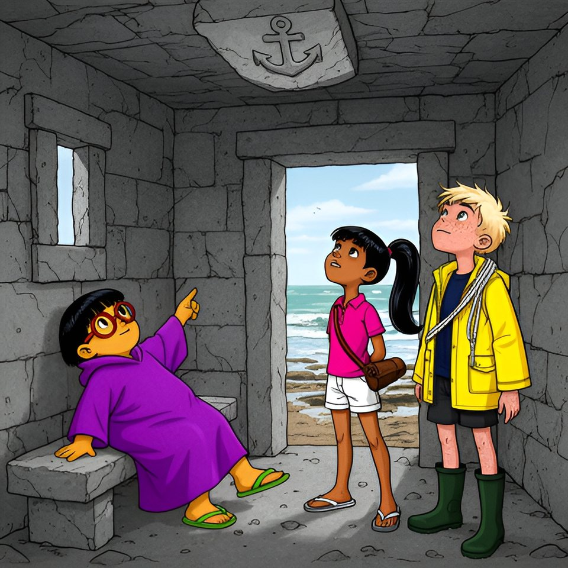

Titistoire › Les Galaxies (8-10 ans)
Le chemin que la mer reprend
Le Trésor coupé en deux, épisode 3 sur 8 : un feuilleton à énigmes sur l'île de Lodenn.

▶ Écouter et regarder l'histoire
Gratuit, sans inscription : la voix lit, le texte suit mot à mot, les images tournent comme dans un album.
Le texte de l'histoire
Les Bottes — Maël, Enora, Tino — et les Tongs — Victoire, Awa, Oscar — ont signé un traité : part à deux. Les deux moitiés de carte se sont emboîtées ; le long de la découpe, des griffures sont devenues des lettres. On les a lues tout haut, près d'un homme en veste grise.
Elles disaient : « Avant la maline, quatre leçons. La première t'attend au bout du chemin que la mer reprend, dans la maison sans lit ni feu, au toit de pierre. Cherche l'ancre qui n'a jamais mouillé. » Et Maël a seulement répondu : « Demain, soixante-dix-huit. Après-demain, trop tard. »
Le lendemain, Victoire fut à la cale avant tout le monde. Sur l'ardoise, Job avait tracé le chiffre du jour, soixante-dix-huit, et l'heure de la basse mer : quinze heures cinquante-cinq. « Je propose un marché, lança-t-elle à Maël. Tu m'expliques ton soixante-dix-huit, et j'oublie que j'ai attendu toute une nuit. »
Maël regarda la mer, comme on relit une phrase avant de la prononcer. « Le chemin que la mer reprend : le Sillon. Elle le donne et le reprend deux fois par jour, mais jamais en dessous de soixante-dix. Aujourd'hui : soixante-dix-huit. Demain : soixante-cinq. Ensuite, elle boude huit jours. » Fin du bulletin.
« Et la maison ? » Tino leva son seau comme on lève le doigt : il se retenait depuis la veille. « C'est pas moi qui le dis, c'est Job : ni lit ni feu, pour que le guetteur ne s'endorme pas. Même le toit est en caillou. »
« Le Corps de garde ! s'écria Enora. Sur la Miette, au bout du Sillon ! Et la vérité vraie, c'est qu'il y a une ancre devant sa porte. Neuf cents kilos, à quatre-vingt-dix-neuf pour cent : mon arrière-grand-père la portait d'une main. — Affirmatif pour l'ancre, admit Maël. Départ : treize heures cinquante-cinq. »
À une heure, six enfants se présentèrent au bureau du port. Maël, Enora et Tino pendirent leurs flotteurs — le jaune, le vert, l'orange — au rang du milieu : à la grève. Victoire fit un pas vers la cale. Une manche rouge brique lui barra le chemin.
« Pas de flotteur, pas de grève, énonça Job. — Je propose un marché. — Hein ? — J'ai onze ans ! protesta Victoire. — Moi, j'ai embarqué mousse à quatorze. Et la veille encore, je déplaçais mon flotteur. — Mousse ? risqua Oscar. — Le gamin du bord. Celui qui a les jambes courtes et qui court tout le temps. »
Enora prit une grande inspiration : celle des histoires à détails. « Enora : houle », prévint Maël. Puis il fit une chose qui lui coûtait plus cher qu'une régate perdue. Il demanda. Enfin, presque. « Ils sont avec nous », lâcha-t-il, les yeux sur ses bottes.
Job les considéra tous les six, comme on regarde le ciel avant de sortir. Puis il ouvrit un tiroir qui grinça de surprise, et en tira trois flotteurs de liège brut, gros comme des poires. « Vous les peindrez. — La Miette, annonça Maël. — À la cloche, demi-tour, les hirondelles. »
À la pointe du Moulin, il fallut attendre. La mer descendait à son pas, lâchant un galet, puis un autre ; assis en haut de la grève, six enfants regardaient naître un chemin. C'est alors qu'un bateau gris, hérissé d'antennes, doubla la pointe sans rien demander à personne.
« Le Hérisson, souffla Tino. Il va à la Miette. » Victoire bondit. « Il était à la crêperie ! Il a tout entendu ! » Le bateau filait là où il n'y avait pas encore de chemin : lui se moquait bien des marées. Personne ne bougea pour autant. On descend derrière la mer, jamais devant.
Maël regardait plus loin, vers un cargo gros comme une allumette. « Mon père est sur un bateau comme ça, de l'autre côté de la terre. Là-bas, il fait nuit : à cette heure-ci, il prend son quart. — Son quoi ? s'étonna Victoire. — Son tour de garde. Sur le pont, chacun le sien, pendant que les autres dorment. »
Puis il se leva. Il n'avait pas de montre ; il avait la mer. « Treize heures cinquante-cinq. Deux heures avant la basse mer : Sillon dégagé. On y va. » Ils coupèrent par le Chas, cette fente de rocher où ne passent que les enfants et les chats, dévalèrent la grève, sautèrent sur le Sillon.
Sur la Miette, quelqu'un les avait devancés. Un grand homme mince sortait à reculons du Corps de garde, plié en deux sous la porte basse, promenant au ras du sol une sorte de poêle à frire au bout d'un manche : un détecteur de métaux.
« Bonjour, l'équipe, salua-t-il sans quitter des yeux sa tablette vert citron. Je m'appelle Gildas. Rien dans le sol de cette maison : quatre mètres carrés de granit. C'est mesuré. » Il s'écarta très poliment, et s'en alla promener sa poêle dans l'herbe.
Devant la porte rouillait l'ancre d'Enora, plus haute que Tino, rouge jusqu'au cœur. On tourna autour, on gratta. « Négatif, trancha Maël. Rouillée comme ça, elle a mouillé cent fois. — Alors c'est dessous », décréta Victoire.
Chacun empoigna un bras de l'ancre et tira de son côté, c'est-à-dire en sens contraire. L'ancre ne bougea pas d'un cheveu. « Tu es têtu, constata Victoire, toute rouge. — Azénor est née un soir de maline. C'est pour ça qu'on est têtus. »
Azénor, c'était l'aïeule de Maël : la fille du capitaine, celle qui était restée sur l'île. Victoire descendait de l'autre, celle qui était partie ; et chez elle, ce prénom-là ne se prononçait pas. « Objection : c'est toi qui tires du mauvais côté. » Et ils tirèrent encore un bon moment, pour le principe.
Dans l'herbe rase, Enora s'était assise près d'Awa. « La vérité vraie, c'est que la Miette est un ancien volcan. Éteint depuis quatre mille deux cents ans. Le Corps de garde, c'est le bouchon. — En fait, un volcan a un cratère. — Il est dessous. »
« En fait, un volcan crache de la roche noire. Ici, c'est du granit. — Du granit de volcan. Très rare. — En fait… » Awa s'arrêta net. Il lui arrivait une chose inouïe : elle avait envie de connaître la suite. « Et il fumait quand, ton volcan ? — Le mardi. »
Awa éclata de rire. Enora aussi, une seconde plus tard, d'étonnement. Elles se regardèrent en coin, très surprises, et décidèrent de n'en parler à personne. Devant la porte, les deux chefs tiraient toujours.
Il restait l'intérieur. On y tenait debout, à condition d'avoir onze ans ou moins : un banc de pierre, une fente pour guetter, quatre murs nus. Ni lit ni feu. Et rien dans le sol : c'était mesuré.
Oscar entra le dernier. Sur le Sillon, quatorze algues lui avaient frôlé les chevilles — Tino avait compté. Il avisa le banc, s'y allongea, croisa les mains sur son poncho et poussa le soupir d'un homme qui a beaucoup souffert. Puis il ne bougea plus.
« Oscar, on cherche, là ! » s'agaça Victoire. Oscar leva un doigt vers le plafond. « Tadam », fit-il — mais si bas que ce n'était presque plus un tadam. Au-dessus de lui, dans la grande dalle du toit, quelqu'un avait gravé une ancre.
Elle n'était pas plus large qu'une main. Ni la mer, ni la pluie, ni la rouille ne l'avaient jamais touchée : de toute la Miette, c'était la seule chose restée au sec depuis le premier jour. L'ancre qui n'avait jamais mouillé. Et tout contre elle couraient quatre lignes.
Victoire se haussa sur la pointe des tongs et lut, de la voix qu'elle prenait pour les vieilles écritures : « Première leçon : la mer ouvre à son heure, jamais à la tienne. La deuxième t'attend à la Pierre Longue. »
Elle reprit son souffle. « Elle n'est ni couchée ni tombée ; elle était vieille avant le premier bateau. Fais comme elle : regarde la mer, et compte. » On n'entendit plus que le vent, qui passait par la fente pour écouter.
« Relis-la, demanda Maël. Tout doucement. » C'était la deuxième fois de la journée qu'il demandait quelque chose. Victoire relut, en posant les mots un par un, comme des galets : « Première leçon : la mer ouvre à son heure, jamais à la tienne. La deuxième t'attend à la Pierre Longue. »
« Elle n'est ni couchée ni tombée ; elle était vieille avant le premier bateau. Fais comme elle : regarde la mer, et compte. » Tino, à tout hasard, regarda la mer et commença à compter.
Alors la cloche sonna. Elle arrivait de loin, par-dessus l'eau, claire et têtue. Quinze heures cinquante-cinq. C'était l'étale : ces vingt minutes où la mer ne monte ni ne descend, où elle retient son souffle. « À la cloche, demi-tour », récita Tino. Personne ne discuta : on ne discute pas avec une cloche.
Dehors, Gildas repliait son appareil. « Je peux ramener l'équipe en bateau. » Oscar regarda le Hérisson comme on regarde un canapé. « Négatif, répondit Maël. On est venus à pied. On rentre à pied. — C'est noté. » Il n'y avait pas de porte à tenir ; Gildas se rangea tout de même pour les laisser passer.
On reprit le Sillon sans courir. À mi-chemin, Tino se retourna. Là-bas, Gildas se pliait en deux pour rentrer dans le Corps de garde ; et, pour une fois, il ne regardait ni son écran ni le sol. « Il a levé la tête », signala Tino. Personne n'écoutait jamais le plus petit.
Le soir, du haut du Môle, on vit la mer reprendre son chemin, galet après galet. Pour huit jours. Maël comptait sur ses doigts les cailloux de Lodenn qui portaient un nom. « La Pierre Couchée. La Sentinelle. Les Chanteuses. Les Jumelles. Pierre Longue : néant. »
« Une pierre longue ? soupira Enora. À Lodenn, on n'a que ça. » Ni couchée, ni tombée, vieille avant le premier bateau… Où pouvait-elle bien se tenir, depuis si longtemps, sans que personne ait jamais su son nom ?
Au bureau du port, six flotteurs étaient rentrés au rang d'à terre : trois peints, trois nus. Ce soir-là, la mer revint border Lodenn, comme tous les soirs. Sur l'ardoise de la cale, Job écrivit le chiffre du lendemain : soixante-cinq.
Épisode suivant : Deux cents pas de mousse